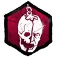

Objets
- Boîte à outils
- La Boîte à Outils est un Objet qui peut utilisé pour réparer les Générateurs plus rapidement ou saboter les Crochets. Les différentes Boîtes à Outils ont différents usages, et toutes ne sont pas autant efficaces pour les deux actions. Des Accessoires peuvent être équipés afin d'améliorer leur vitesse d'action ou leur durabilité.

- Trousse de soins
- La Trousse de Soins est un Objet utilisé pour se soigner soi-même ou soigner d'autres Survivants. Les autres Survivants peuvent aussi être soignés sans l'aide d'une Trousse de Soins, mais l'action dure beaucoup plus longtemps.
- Lampe de poche
- La Lampe de Poche est un Objet utilisé pour aveugler le Tueur. Si ce dernier porte un Survivant sur son épaule, l'aveugler lui fera lâcher le Survivant et l'étourdira pendant quelques secondes.
- Carte
- La Carte est un Objet utilisé pour repérer les Éléments Interactifs du Monde. La carte standard ne peut repérer que les Générateurs, mais peut traquer d'autres éléments avec l'utilsation de certains Accessoires qui améliorent son pouvoir. Les Auras traquées peuvent même être rendues visibles aux autres Survivants et des marqueurs peuvent être créés, ressemblant à des piliers de lumière.
- Clé
- La Clé est un Objet utilisé pour ouvrir une Trappe fermée (sauf pour la Clé Cassée). Elle peut aussi être utilisée avec des Accessoires afin d'améliorer son pouvoir et montrer différentes à son utilisateur, telles que celles des Survivants proches ou celle du Tueur. La Clé Cassée ne peut être utilisée pour ouvrir la Trappe et n'est d'aucune utilité sans Accessoires.

Offrandes
-

- Memento Mori
- Ces Offrandes octroient au Tueur la capacité de tuer les Survivants de ses propres mains, selon certaines conditions.

- Parades
- Ces Offrandes font appel à L'Entité pour accorder des faveurs spéciales: Ces offrande vous protège contre la parte de votre Objet et de vos Accessoires ou de rejeter toutes les Offrandes qui modifient les chances d'être envoyé dans un Royaume spécifique.
- Linceuls
- Ces Offrandes affectent l'emplacement d'apparition des Survivants durant le chargement de la partie.
- Distance entre les Crochets
- Fait appel à l'Entité pour diminuer ou augmenter la distance entre les Crochets sacrificiels apparaissant dans le monde de jeu.
- Points de Sang Bonus
- Ces Offrandes octroient des Points de Sang supplémentaires à la fin d'une partie, basés sur le score obtenu par le Joueur dans la Catégorie associée à l'Offrande. La plupart d'entre elles n'affectent que l'utilisateur de l'Offrande, mais certaines peuvent affecter plusieurs Joueurs, incluant le camp adverse.
La Toile
Utilisation
La Toile est la mécanique de Progression de Personnage de Dead by Daylight et permet aux Joueurs d'acheter de nombreux Éléments Déblocables en échange de Points de Sang, gagnés en jouant à des parties classées. La Toile est construite en trois cercles concentriques autour d'un Nœud central dont les lignes interconnectées le relient à un nombre aléatoire de Nœuds, situés dans les cercles. La quantité de Nœuds donnée au sein d'une Toile dépend du Niveau actuel du Personnage, les Niveaux les plus élevés produisant des Toiles plus grandes. Toutes les cinq Toiles, la Toile est plus grande que d'habitude pour son Niveau.
Achat de Nœud
Quand une nouvelle Toile est générée, les Joueurs ont uniquement accès aux Nœuds du cercle intérieur, connecté au Nœud central. Afin d'accéder aux Nœuds des cercles central et extérieur, les Joueurs doivent respectivement acheter des Nœuds des cercles intérieur et central, permettant de créer une voie vers les Nœuds désirés.
Prix des Nœuds
Les Nœuds comptent différentes Raretés qui dépendent du type de l'Élément Déblocable affiché. Leur coût est directement lié à ce niveau de Rareté.
- Les Nœuds d'Événement coûtent désormais 2,000 Points de Sang
- Les Nœuds Communs coûtent désormais 2,000 Points de Sang
- Les Nœuds Peu Communs coûtent désormais 2,500 Points de Sang
- Les Nœuds Rares coûtent désormais 3,250 Points de Sang
- Les Nœuds Très Rares coûtent désormais 4,000 Points de Sang
- Les Nœuds Ultra Rares coûtent désormais 5,000 Points de Sang